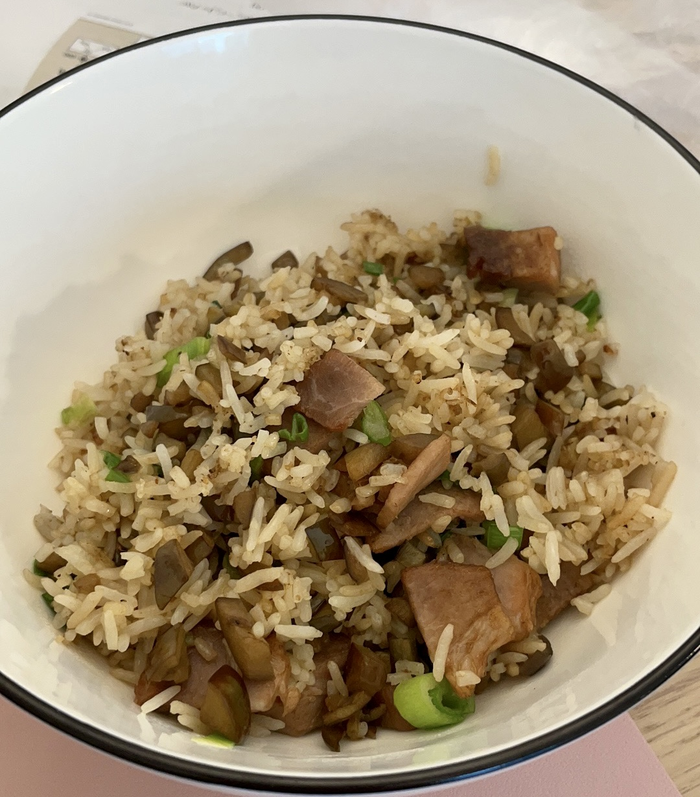

Eggplant Fried Rice

Description
Eggplant fried rice mmmmmmmmmmmmmmmmmmmmm
Ingredients
- Rice
- Eggplant
- Meat or some sort
- Green onion
- Salt
- Soy sauce
- Oil
Steps
- Cook rice at quick cook because you are really craving eggplant fried rice
- Add too much water because you realize that you forgot how to cook rice and fail your asian ancestors
- Have mushy rice
- Chop eggplant to small small pieces, chop meat and green onion to less small pieces
- Heat wok add oil
- Add eggplant and meat
- Add salt and soy sauce and stir stir
- Add rice and green onion
- Rice stick to bottom of wok :(
- Add salt and soy sauce again while you scrape the rice off the bottom of the wok
- Serve and eat your mushy rice
- Try again next time